Armored Vehicle Technology
Armored Vehicle technology from the battlefields of the First World War to modern combat vehicles, providing ground forces with protection and firepower.
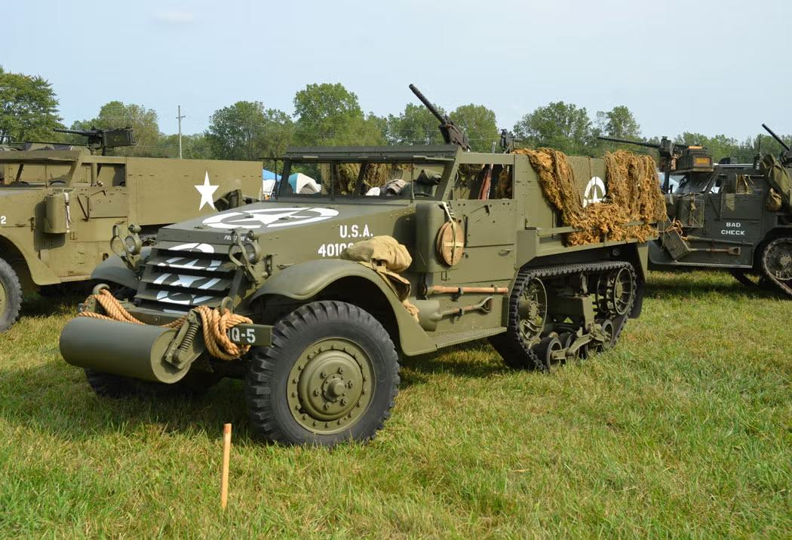
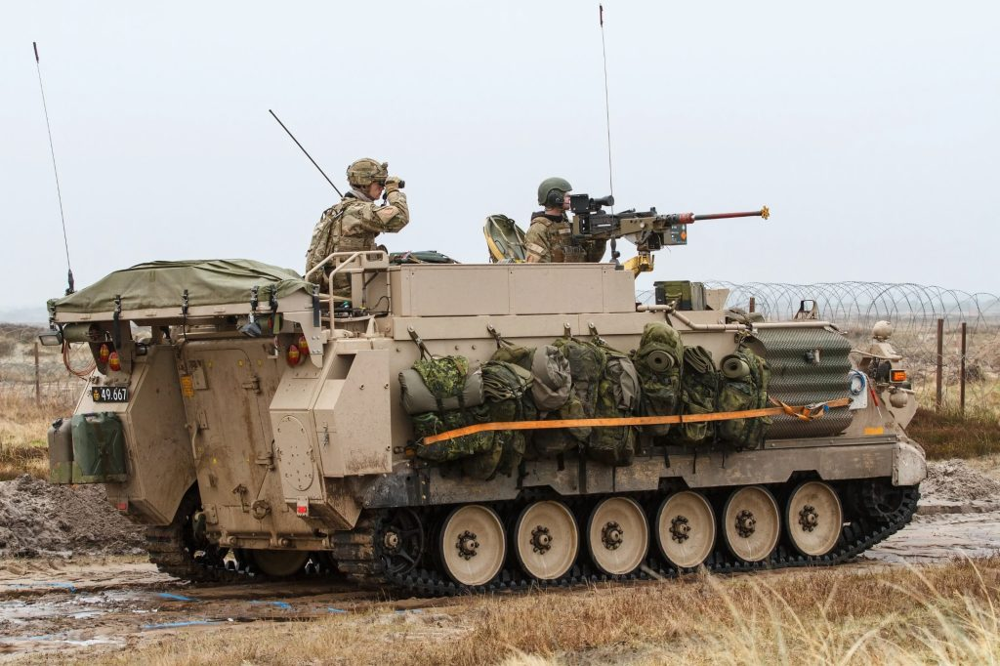
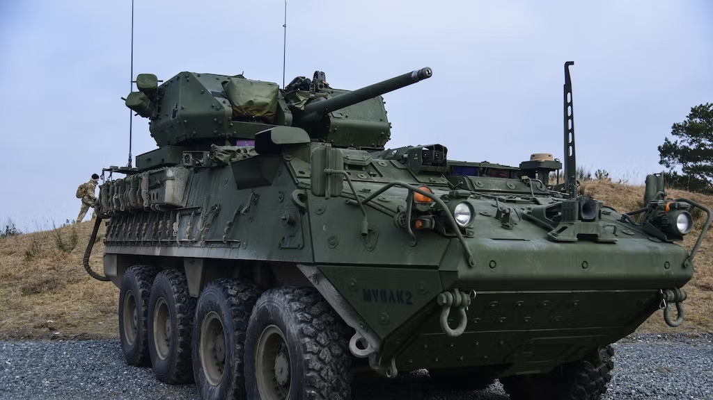
The evolution of U.S. Armored Personnel Carriers reflects a continuous effort to improve the protection, mobility, and effectiveness of infantry forces on the battlefield. To enhance ground combat capability, the U.S. military developed vehicles that could safely transport troops through hostile environments while offering protection from small arms fire and artillery. However, the early stages of armored troop transport began with limited capability. During World War II, the United States relied on vehicles such as the M3 Half-Track, which combined wheels and tracks to improve mobility over rough terrain. These vehicles provided only light armor protection and limited defensive firepower, but they represented an important step toward mechanized infantry warfare and highlighted the need for fully enclosed armored transport vehicles.
By the Cold War era, the United States had developed more advanced armored personnel carriers such as the M113, which became one of the most widely used armored vehicles in military history. Unlike earlier half-tracks, the M113 featured a fully tracked design with an enclosed aluminum hull, significantly improving crew protection and battlefield survivability. It was widely used in conflicts such as Vietnam, where mobility and protection in difficult terrain were essential. These advancements marked a major turning point in armored warfare, as infantry units were no longer exposed during transport and could be deployed more effectively in combat zones.
In the modern era, armored personnel carriers such as the Stryker represent a shift toward speed, digital integration, and modular battlefield capability. The Stryker is a wheeled armored vehicle designed for rapid deployment, offering improved mobility over long distances while maintaining strong protection against modern threats such as improvised explosive devices. Equipped with advanced communication systems and modular weapon configurations, it allows infantry units to adapt quickly to changing combat conditions. These developments reflect the U.S. military’s continued focus on combining protection, mobility, and networked warfare to maintain effectiveness in modern conflicts.
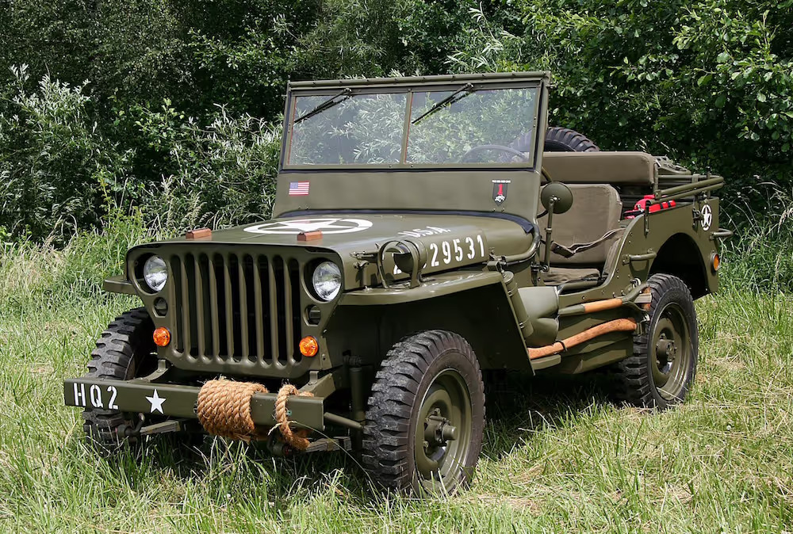
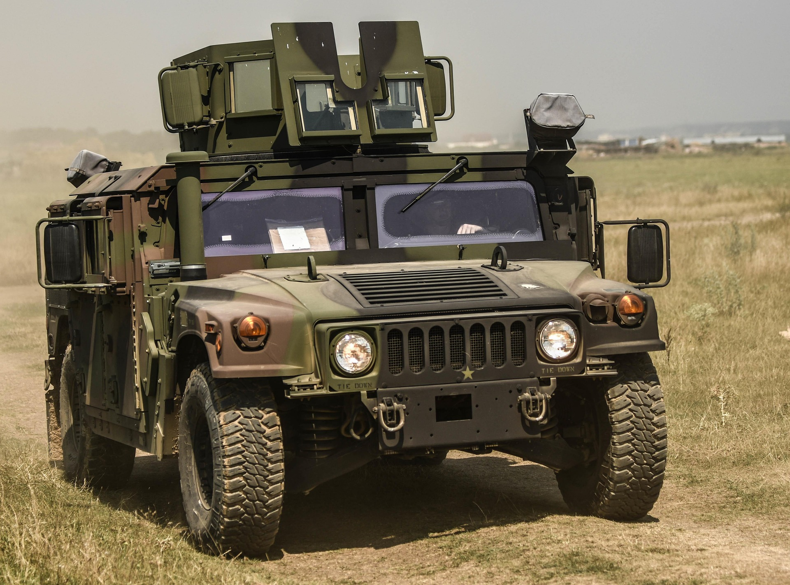
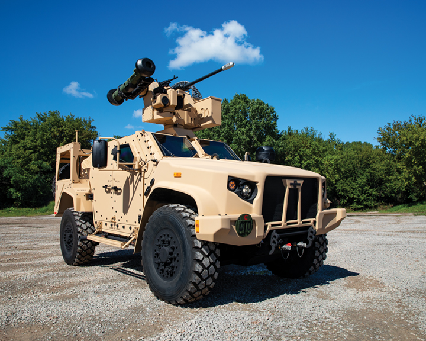
The evolution of U.S. Utility and Tactical Vehicles reflects a continuous need for mobility, flexibility, and reliability on the battlefield. These vehicles are essential for transporting troops, equipment, and supplies while also supporting reconnaissance and communication missions. However, the development of light military vehicles began with very basic designs. During World War II, the United States relied on vehicles such as the Willys Jeep, which became one of the most iconic military vehicles in history. Although lightly armored and simple in design, the Jeep was extremely versatile and could operate in nearly any terrain, providing commanders with a fast and dependable transport solution. This early stage highlighted the need for more durable and multifunctional tactical vehicles in modern warfare.
By the Cold War era, the U.S. military developed more advanced tactical vehicles such as the Humvee (HMMWV), which replaced many of the earlier utility vehicles. The Humvee was designed to be more powerful, more durable, and capable of operating in a wide range of environments including deserts, jungles, and urban terrain. It became widely used for troop transport, supply movement, reconnaissance, and command operations. Its adaptability made it a key asset in numerous conflicts and established it as the standard light tactical vehicle for decades. These improvements marked a major shift toward vehicles that could support multiple battlefield roles while offering greater reliability and performance.
In the modern era, utility and tactical vehicles such as the Joint Light Tactical Vehicle (JLTV) represent a major advancement in protection, technology, and battlefield connectivity. The JLTV was designed to replace older Humvee models by providing significantly improved armor protection against explosives and ambush threats while maintaining high mobility. It also features advanced communication systems and modular configurations, allowing it to be adapted for different mission types such as reconnaissance, transport, and combat support. These developments demonstrate the U.S. military’s ongoing effort to combine survivability, speed, and technological integration in modern tactical operations.
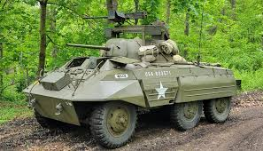
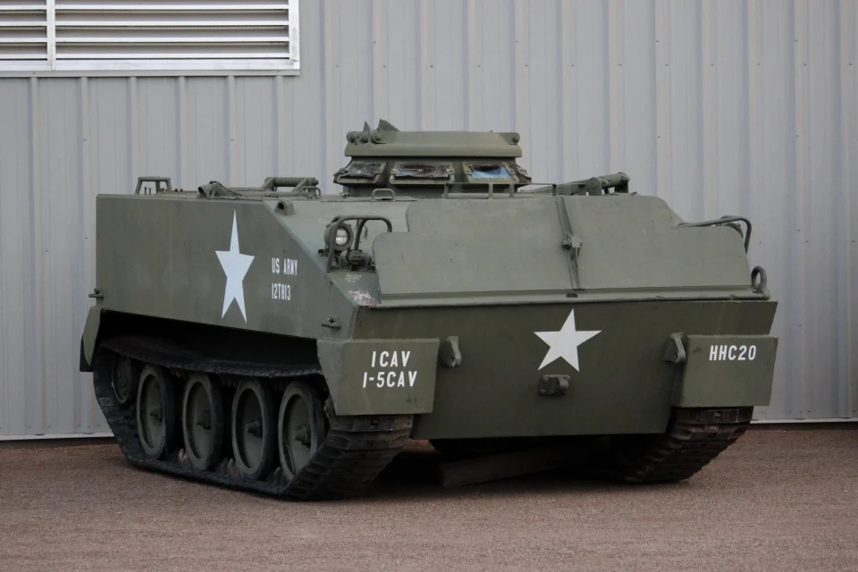
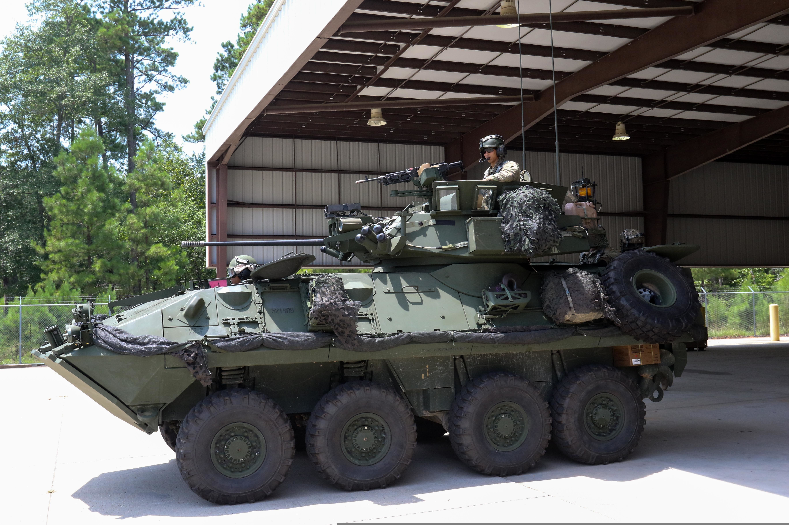
The evolution of U.S. Reconnaissance Vehicles reflects a continuous need for speed, awareness, and battlefield intelligence. These vehicles are designed to scout enemy positions, gather information, and support commanders with real-time situational awareness. However, early reconnaissance in World War II relied on relatively light armored cars and improvised scout vehicles that prioritized speed over protection. Vehicles such as the M8 Greyhound were used for fast movement across the battlefield, allowing forces to observe enemy activity and report back quickly. While effective for their time, these early reconnaissance vehicles offered limited protection and were vulnerable in direct combat situations, highlighting the need for more advanced scout platforms.
During the Cold War, reconnaissance vehicles became more advanced with improved armor, mobility, and weapon systems. The introduction of vehicles such as the LAV-25 allowed U.S. forces to conduct scouting missions with greater survivability and firepower. These vehicles were equipped with cannons, machine guns, and advanced optics, enabling them to both observe and engage lightly defended targets if necessary. This period marked a major shift in reconnaissance strategy, as vehicles were no longer only passive observers but could actively participate in combat when required, increasing their tactical value on the battlefield.
In the modern era, reconnaissance vehicles have evolved into highly advanced platforms integrated with digital communication systems, sensors, and battlefield networking technology. Modern variants such as Stryker reconnaissance configurations are equipped with advanced surveillance equipment, thermal imaging, and real-time data sharing capabilities. These systems allow units to detect threats from long distances and coordinate with other forces instantly. This evolution demonstrates the transformation of reconnaissance vehicles from simple scouting platforms into essential intelligence-gathering systems that play a critical role in modern networked warfare.
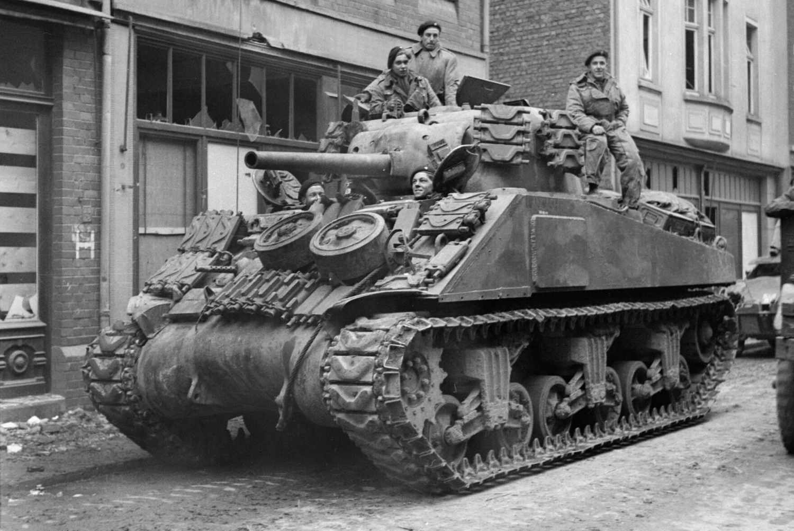
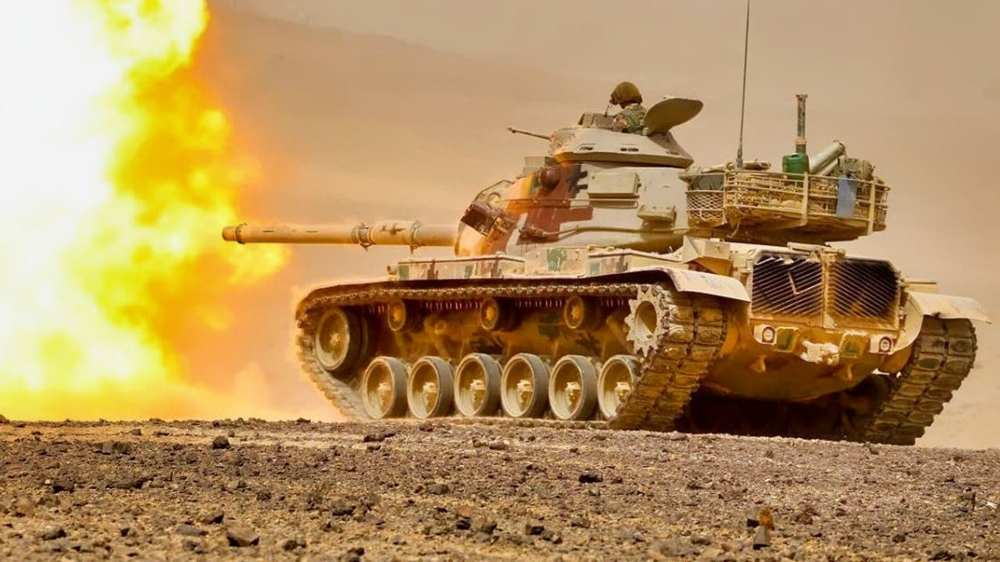
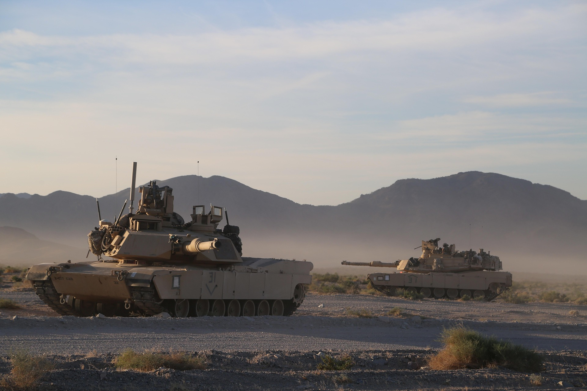
The evolution of U.S. Main Battle Tanks reflects a continuous drive for greater firepower, protection, and battlefield dominance. Armored warfare began in World War I, when the first tanks were introduced to break the deadlock of trench warfare. These early vehicles were slow, mechanically unreliable, and offered limited combat effectiveness, but they proved the value of armored ground combat. By World War II, the United States developed more effective tanks such as the M4 Sherman, which became the backbone of American armored forces. While not the most powerful tank of the war, the Sherman was reliable, easy to produce in large numbers, and adaptable to many battlefield roles, helping the U.S. establish strong armored capabilities during large-scale combat operations.
During the Cold War, tank design evolved significantly as global tensions increased and armored warfare became more advanced. The U.S. developed tanks such as the M60 Patton, which featured improved armor, a more powerful main gun, and better mobility compared to earlier designs. These improvements were driven by the need to match or exceed Soviet armored forces in potential large-scale battlefield engagements. This era marked the transition from traditional WWII-era tanks to the concept of the main battle tank, combining firepower, armor protection, and mobility into a single versatile platform.
In the modern era, the M1 Abrams represents the pinnacle of U.S. main battle tank development. Equipped with advanced composite armor, a powerful 120mm smoothbore cannon, and sophisticated targeting and fire-control systems, the Abrams is designed for high-intensity modern warfare. Upgraded versions such as the M1A2 SEP variants continue to improve battlefield awareness, survivability, and digital integration. These advancements allow the Abrams to dominate in both conventional warfare and asymmetric combat environments, demonstrating the evolution of tanks into highly advanced, networked combat systems.
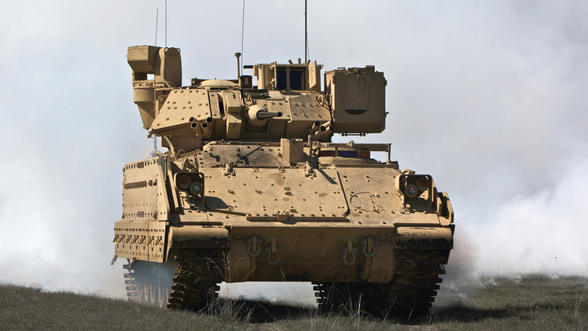
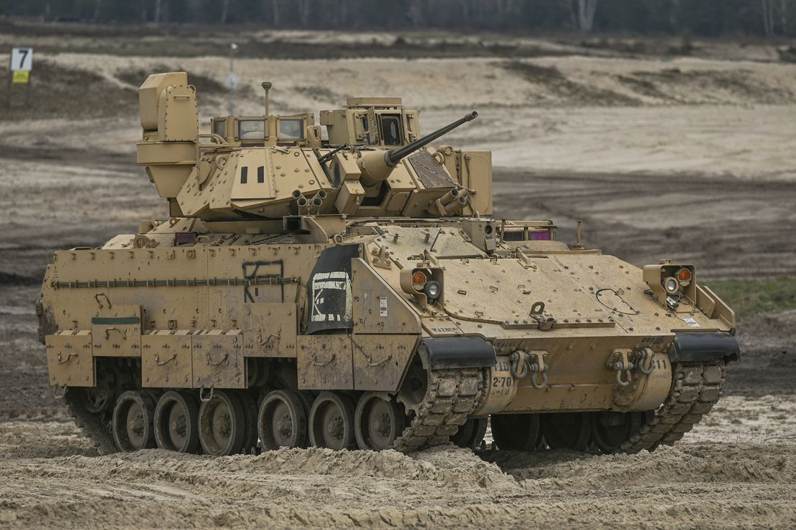
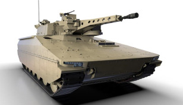
The evolution of Infantry Fighting Vehicles (IFVs) reflects a continuous effort to combine troop mobility, protection, and battlefield firepower into a single platform. While true IFVs did not exist during World War II, early armored vehicles such as the M3 Half-Track were used to transport infantry into combat zones while providing limited protection and mounted weapon support. These vehicles allowed soldiers to move faster and more safely than traditional unarmored transport, but they still left infantry vulnerable in many combat situations. This early stage highlighted the need for a fully enclosed vehicle capable of both transporting and supporting infantry during combat operations.
During the Cold War, the United States developed its first true Infantry Fighting Vehicle with the introduction of the M2 Bradley. Unlike earlier troop carriers, the Bradley was designed to allow infantry to fight both inside and outside the vehicle, featuring a 25mm cannon, anti-tank missile systems, and improved armor protection. It was widely used in conflicts such as the Gulf War, where its firepower and mobility proved highly effective in fast-moving armored engagements. This marked a major shift in infantry warfare, as soldiers were no longer simply transported to the battlefield but were supported directly by their vehicle during combat.
In the modern era, upgraded versions such as the M2A4 Bradley continue to improve the capabilities of Infantry Fighting Vehicles through enhanced armor, digital battlefield systems, and improved targeting technology. These advancements increase survivability against modern threats such as mines, improvised explosive devices, and anti-tank weapons. Modern IFVs are also integrated into networked battlefield systems, allowing them to share real-time information with other units. This evolution demonstrates how IFVs have become essential components of mechanized warfare, combining protection, mobility, and precision firepower in modern military operations.
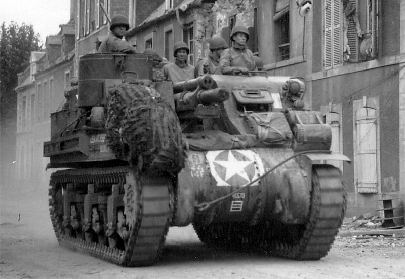
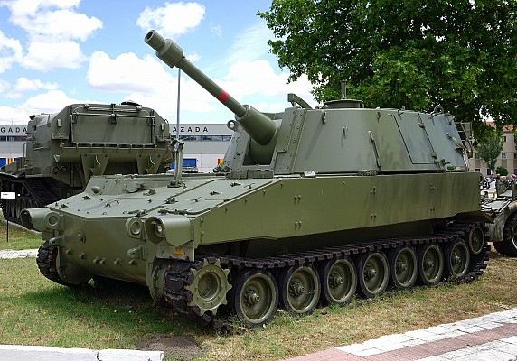
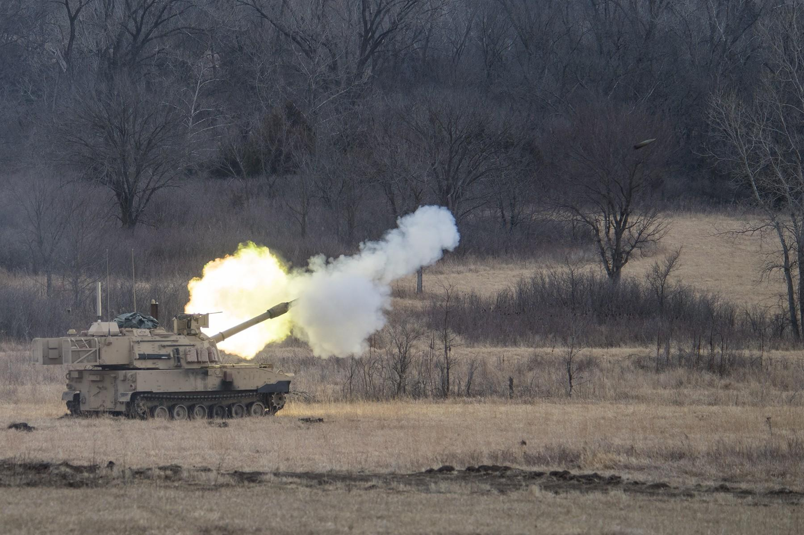
The evolution of Self-Propelled Artillery reflects a continuous effort to increase mobility, firepower, and responsiveness on the battlefield. Traditional artillery in the early 20th century was primarily towed by vehicles or horses, requiring time-consuming setup and limiting its ability to quickly reposition. During World War II, the United States introduced early self-propelled artillery such as the M7 Priest, which mounted a 105mm howitzer on a tracked chassis. This allowed artillery units to move with advancing armored forces and provide immediate fire support without the delays of traditional towed guns. These early systems greatly improved battlefield flexibility and demonstrated the value of mobile fire support.
During the Cold War, self-propelled artillery became more advanced with systems such as the M109 howitzer series. These vehicles featured larger 155mm guns, improved armor protection, and enhanced range and accuracy. The M109 became one of the most widely used artillery systems in NATO forces and was continuously upgraded to meet evolving battlefield demands. This era emphasized longer-range fire support and greater integration with armored and mechanized units, allowing artillery to respond more effectively to fast-moving combat situations.
In the modern era, systems such as the M109A7 Paladin represent the latest evolution of armored artillery. These vehicles feature advanced digital fire-control systems, improved survivability, and faster firing capabilities. Integrated with modern battlefield networks, they can receive targeting data in real time and deliver highly accurate long-range strikes with greater efficiency than earlier systems. This evolution reflects the shift from traditional area bombardment to precision-guided, network-connected artillery support in modern warfare.